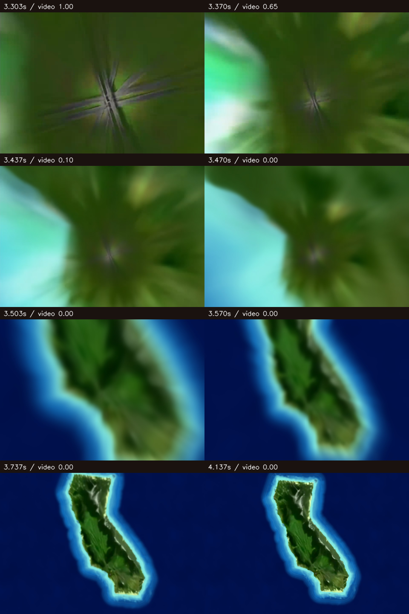

Video to island — V4 visual review
Review 2 is pending your approval. Watch the pullback at normal speed first, then inspect the overlap frames below.
Open interactive preview · Open recording
This is a recording of the exported browser preview: the original HTML video, blended live Godot island, live-only radial blur, and animated water. No offline substitution or compositing was used.
Across the handoff

Review scope
Please assess whether the pullback feels continuous: no visible cut, doubled coastline, exposure jump, scale jump, or camera reset. The live terrain, water, and blur approximate the reference; the recording does not establish visual approval automatically.
The interactive preview includes Pause, Play, Replay, Attract, and Fullscreen. Production loading and frontend integration remain V5. Hardware phone performance and visual review 3 remain V6.